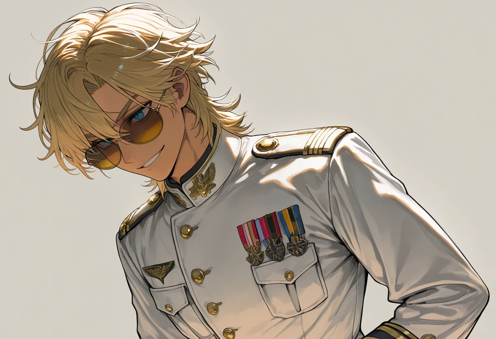
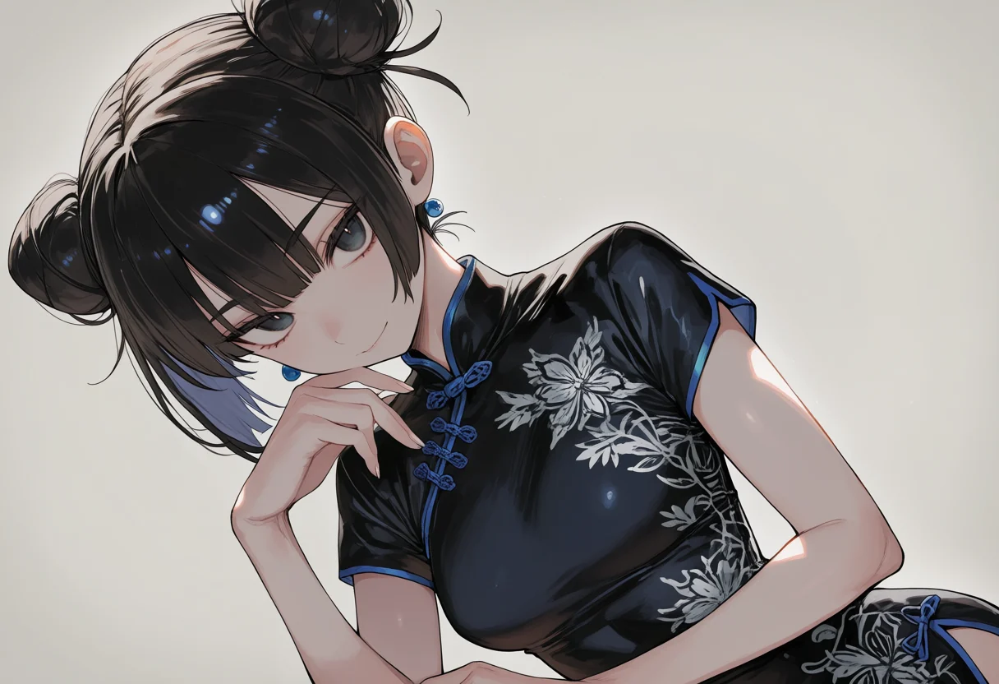
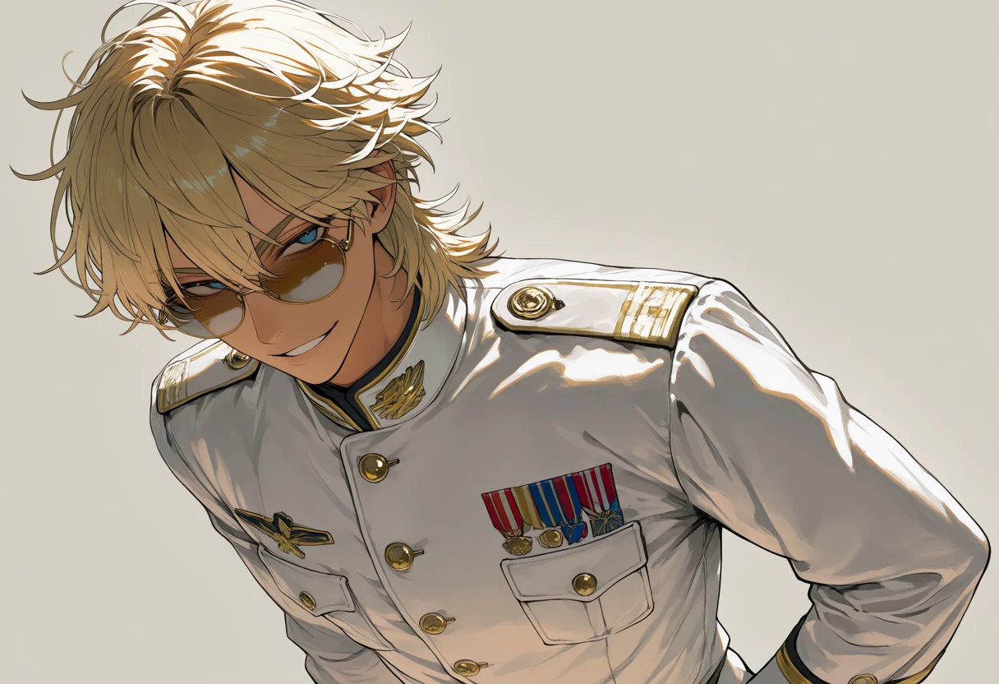

FEATURE
2월 28일 · 후지
무패의 챔피언, 세 번째 왕관을 향해 — 류자키 린 ‘Orochi’
지난 시즌 전 라운드 우승. 항자대 제6비행대의 에이스는 아시아 시리즈 역사상 처음으로 무패 시즌을 완성했다. 개막을 앞둔 인터뷰에서 그는 승리에 대해 이야기하지 않았다.
“후후… 이기는 건 이제 예정된 일이잖아요. 저는 그저, 제 앞을 막아설 분이 한 명이라도 계셨으면 하는 것뿐입니다.”
2월 28일 · 후지
지난 시즌 전 라운드 우승. 항자대 제6비행대의 에이스는 아시아 시리즈 역사상 처음으로 무패 시즌을 완성했다. 개막을 앞둔 인터뷰에서 그는 승리에 대해 이야기하지 않았다.
“후후… 이기는 건 이제 예정된 일이잖아요. 저는 그저, 제 앞을 막아설 분이 한 명이라도 계셨으면 하는 것뿐입니다.”
 ENTRY
ENTRY
3월 2일 · 서울
아시아 시리즈가 네 팀에서 다섯 팀 체제로 확대된다. 사무국은 18전비의 엔트리를 승인했으나, 파일럿과 치프 엔지니어 명단은 개막 직전까지 비공개로 남았다.
2월 24일 · 대구
11전비의 최고참은 최근 불거진 은퇴설에 짧게 답했다. 팀 관계자는 그가 올 시즌 유난히 신인 명단을 자주 확인했다고 전했다.
“…어설픈 궤적은 내가 부숴주지. 그게 후배한테 해줄 수 있는 전부다.”

EXCLUSIVE2월 19일 · 요코스카
VFA-27의 에이스는 늘 웃는 얼굴로 취재진을 상대해 왔다. 그러나 3년 전 항모 착함 사고를 묻는 질문이 나오자, 농담을 멈추고 자리를 떴다. 팀 치프 사라 젠킨스는 “다음 질문”이라는 말로 회견을 닫았다.

TECH2월 15일 · 베이징
PLAAF 제1항공여단은 사무국에 EW 운용 범위 유권해석을 요청했다. 정중한 문장 사이에 날카로운 문구가 섞여 있었다는 것이 관계자들의 전언이다.
 CIRCUIT
CIRCUIT
2월 11일 · 상하이
지난 시즌 유리 반사로 인한 시야 교란 사고가 잇따르자, 사무국은 마천루 협곡 구간의 통과 폭을 넓혔다. 파일럿들은 “여전히 좁다”는 반응이다.
2월 6일 · 대구
TCE 재밍 아래 파일럿에게 남는 유일한 데이터는 치프의 목소리다. 11전비 박정화 반장은 “그래서 우리는 숫자를 말하지, 걱정을 말하지 않는다”고 했다.
 STEWARDS
STEWARDS
1월 30일 · 사무국
지난 시즌 G리미트를 해제하고 한계 선회를 감행한 파일럿은 실격과 2GP 출전 정지를 받았다. 사무국은 개막을 앞두고 같은 판례를 다시 공지했다.
| POS | 파일럿 | 팀 · 기체 | WIN | PTS |
|---|---|---|---|---|
| 1 |
류자키 린OROCHI · JPN |
항자대 제6비행대 · F-2 | 7 | 175 |
| 2 |  리 슈에MANTIS · CHN
리 슈에MANTIS · CHN |
PLAAF 제1항공여단 · J-20 | 0 | 118 |
| 3 |  잭 밀러ROULETTE · USA |
VFA-27 · F/A-18E | 0 | 92 |
| 4 |  강태산ANVIL · KOR
강태산ANVIL · KOR |
11전비 · F-15K | 0 | 71 |
| — | ?
???UNREGISTERED · KOR |
18전비 · KF-21 | — | — |
지난 시즌은 4개 팀 체제로 치러졌습니다. 18전비는 이번 시즌 신규 엔트리로, 데뷔전을 치르기 전까지 순위에 집계되지 않습니다. · 배점 1위 25 / 2위 18 / 3위 12 / 4위 8 / 5위 4


5세대 스텔스기와 4세대기가 정면으로 붙으면 승부는 이륙 전에 끝나 있습니다. APEX 그랑프리는 그 격차를 지우기 위해 모든 참가기에 세 개의 족쇄를 채웁니다. 기체가 아니라 사람이 이기게 만드는 것 — 그것이 이 리그의 유일한 설계 목표입니다.
AGWR
Adaptive G–Wingload Regulation
모든 기체에 통제 포드가 강제됩니다. 중량과 익면적을 실시간 계산해 최대 G를 소프트웨어로 눌러 버립니다. 추력은 제한하지 않으므로 직선에서 앞서는 기체일수록 코너 진입 속도를 스스로 죽여야 합니다. 남는 승부처는 에너지 관리뿐입니다.
TCE
Theater Communications Embargo
경기장 전역에 광대역 재밍이 쏟아집니다. 관제 채널 하나를 뺀 모든 데이터링크와 자동 조준이 마비되고, 파일럿에게 남는 유일한 데이터는 치프 엔지니어의 목소리입니다. 재밍 강도가 오르면 그 목소리마저 노이즈에 잠깁니다.
VEIL
Vision–Enforced Instrument Lockout
센서 퓨전이 무력화됩니다. 아날로그 계기와 공간각, 캐노피 밖을 직접 보는 두 눈만으로 가상 대공망을 피하고 지정 타겟을 무력화해야 합니다. 봉인 훼손은 즉시 실격입니다.
팀 기록 TEAM RECORD
기체 MACHINE
크루 CREW
PILOT
???미등록CHIEF ENGINEER
???미등록크루 명단은 개막전 그리드에서 공개됩니다.
팀 기록 TEAM RECORD
기체 MACHINE

파일럿 PILOT

PILOT
강태산‘ANVIL’ · KORRACEOFFICIAL CASUAL
CASUAL치프 엔지니어 CHIEF ENGINEER

CHIEF ENGINEER
박정화정비반장 · KORRACE OFFICIAL
OFFICIAL CASUAL
CASUAL팀 기록 TEAM RECORD
기체 MACHINE

파일럿 PILOT

PILOT
잭 밀러‘ROULETTE’ · USARACE OFFICIAL
OFFICIAL CASUAL
CASUAL치프 엔지니어 CHIEF ENGINEER

CHIEF ENGINEER
사라 젠킨스치프 엔지니어 · USARACE OFFICIAL
OFFICIAL CASUAL
CASUAL팀 기록 TEAM RECORD
기체 MACHINE

파일럿 PILOT

PILOT
류자키 린‘OROCHI’ · JPNRACE OFFICIAL
OFFICIAL CASUAL
CASUAL치프 엔지니어 CHIEF ENGINEER

CHIEF ENGINEER
사토미 유우치프 엔지니어 · JPNRACEOFFICIAL CASUAL
CASUAL팀 기록 TEAM RECORD
기체 MACHINE

파일럿 PILOT

PILOT
리 슈에‘MANTIS’ · CHNRACEOFFICIAL CASUAL
CASUAL치프 엔지니어 CHIEF ENGINEER

CHIEF ENGINEER
첸 레이운용 총괄 · CHNRACE OFFICIAL
OFFICIAL CASUAL
CASUAL